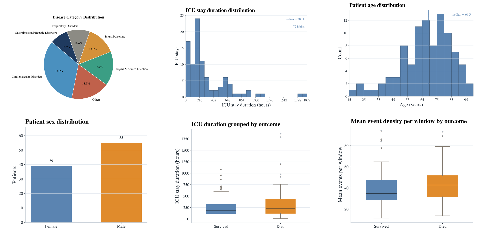

RealICU: Do LLM Agents Understand Long-Context ICU Data?
A Benchmark Beyond Behavior Imitation
Key Contributions
We define the core capabilities of a useful ICU AI co-pilot with over 30 clinicians: assessing Patient Status, Acute Problems, Recommended Actions, and Red Flag Actions.
We propose a systematic benchmark and evaluation framework. RealICU-Gold: 930 physician-consensus windows. RealICU-Scale: 11,862 windows labeled by Oracle, a physician-validated LLM evaluator. All annotations are created using hindsight review of the full patient trajectory, reflecting clinical correctness beyond than behavior imitation.
We introduce a solution to study memory-augmented agents. ICU-Evo, a structured-memory agent that organizes clinical context into heterogeneous memory types aligned with how clinicians reason.
We identify key failure modes. A recall–safety tradeoff and anchoring bias across frontier LLMs. Structured memory helps long-horizon reasoning but is not sufficient for safe ICU decision support.
Abstract
Intensive care units (ICU) generate long, dense and evolving streams of clinical information, where physicians must repeatedly reassess patient states under time pressure, underscoring a clear need for reliable AI decision support. Existing ICU benchmarks typically treat historical clinician actions as ground truth. However, these actions are made under incomplete information and limited temporal context of the underlying patient state, and may therefore be suboptimal, making it difficult to assess the true reasoning capabilities of AI systems.
We introduce RealICU, a hindsight-annotated benchmark for evaluating large language models (LLMs) under realistic ICU conditions, where labels are created after senior physicians review the full patient trajectory using hindsight. We formulate four physician-motivated tasks: assess Patient Status, Acute Problems, Recommended Actions, and Red Flag actions that risk unsafe outcomes. We partition each trajectory with 30-min windows and release two datasets: RealICU-Gold with 930-window annotations from 94 MIMIC-IV patients, and RealICU-Scale with 11,862 windows extended by Oracle, a physician-validated LLM hindsight labeler.
Existing LLMs including memory-augmented ones performed poorly on RealICU, exposing two failure modes: a recall–safety tradeoff for clinical recommendations, and an anchoring bias to early interpretations of the patient. We further introduce ICU-Evo to study structured-memory agents that improves long-horizon reasoning but does not fully eliminate safety failures. Together, RealICU provides a clinically grounded testbed for measuring and improving AI sequential decision-support in high-stakes care.
Four Physician-Motivated Tasks
In consultations with over 30 board-certified clinicians, RealICU evaluates four core capabilities required for a clinically useful ICU co-pilot.
Patient Status
Assess the current overall status of the patient based on all available clinical data.
Acute Problems
Identify acute clinical problems requiring continuous attention and monitoring in future bedside care.
Recommended Actions
Propose short-term treatment recommendations appropriate for the patient's condition.
Red Flag Actions
Identify actions that should be avoided for this specific patient that might cause unsafe outcomes.
The RealICU Benchmark
Based on MIMIC-IV, labels are produced by physicians reviewing the complete patient trajectory with hindsight.
Beyond Behavior Imitation: Hindsight Reviewing
Traditional ICU benchmarks treat recorded clinician actions as ground truth, but these actions reflect decisions made under uncertainty, not necessarily optimal care. RealICU's evaluation is grounded in hindsight review of the full patient trajectory, scoring LLM agents based on clinical correctness rather than behavioral imitation.
RealICU-Gold
Physician-consensus annotations from five senior ICU physicians reviewing full patient trajectories in hindsight. The gold standard for reliable model evaluation.
RealICU-Scale
Large-scale extension using Oracle, a physician-validated LLM-based hindsight evaluator calibrated against expert consensus.

Summary statistics of the RealICU patient cohort derived from MIMIC-IV, including age, gender, ICU duration, disease categories, and outcome distributions.
ICU-Evo: Agent Pipeline
We introduce ICU-Evo as an instance of the memory-augmented agent frameworks to study how structured memory design shapes clinical decision-making.
Observation Agent
Rule-basedNormalize measurements, align them to the 30-min window, and extract vital trend signals.
Assessment Agent
LLMCompress trajectory summary and find critical clinical events.
Insight Agent
LLMProposes patient-specific hypotheses.
Predictor
LLMRead the full memory state, and predict downstream tasks.
Benchmark Results and Failure Modes
Benchmark Results
| Backbone | System | Patient Status | Acute Problems | Action Recom. | Red Flags | |||
|---|---|---|---|---|---|---|---|---|
| Acc ↑ | F1 ↑ | Hit@5 ↑ | R@5 ↑ | Hit@5 ↑ | R@5 ↑ | HRR@5 ↓ | ||
| Gemini-3.1-pro | Full-context | 0.298 | 0.258 | 0.486 | 0.308 | 0.259 | 0.152 | 0.137 |
| Local-window | 0.315 | 0.239 | 0.459 | 0.258 | 0.395 | 0.260 | 0.151 | |
| RAG | 0.402 | 0.348 | 0.596 | 0.342 | 0.496 | 0.313 | 0.216 | |
| ICU-Evo | 0.459 | 0.365 | 0.823 | 0.526 | 0.676 | 0.534 | 0.300 | |
| GPT-5.4 | Full-context | 0.294 | 0.233 | 0.510 | 0.348 | 0.404 | 0.300 | 0.298 |
| Local-window | 0.233 | 0.184 | 0.500 | 0.293 | 0.380 | 0.281 | 0.165 | |
| RAG | 0.288 | 0.256 | 0.599 | 0.349 | 0.480 | 0.398 | 0.234 | |
| ICU-Evo | 0.312 | 0.264 | 0.867 | 0.570 | 0.676 | 0.534 | 0.473 | |
| Qwen3-235B | Full-context | 0.225 | 0.188 | 0.384 | 0.226 | 0.329 | 0.222 | 0.117 |
| Local-window | 0.152 | 0.154 | 0.213 | 0.126 | 0.352 | 0.242 | 0.080 | |
| RAG | 0.315 | 0.271 | 0.379 | 0.211 | 0.453 | 0.324 | 0.095 | |
| ICU-Evo | 0.253 | 0.197 | 0.600 | 0.362 | 0.526 | 0.357 | 0.117 | |
bold = best · underline = second best (per column, per backbone) · HRR@5 ↓ lower is better
| Backbone | System | Patient Status | Acute Problems | Action Recom. | Red Flags | |||
|---|---|---|---|---|---|---|---|---|
| Acc ↑ | F1 ↑ | Hit@5 ↑ | R@5 ↑ | Hit@5 ↑ | R@5 ↑ | HRR ↓ | ||
| Gemini-3.1-pro | Full-context | — | — | — | — | — | — | — |
| Local-window | 0.405 | 0.264 | 0.487 | 0.265 | 0.447 | 0.307 | 0.066 | |
| RAG | 0.442 | 0.312 | 0.568 | 0.315 | 0.466 | 0.331 | 0.073 | |
| ICU-Evo | 0.519 | 0.348 | 0.827 | 0.518 | 0.514 | 0.330 | 0.087 | |
| GPT-5.4 | Full-context | — | — | — | — | — | — | — |
| Local-window | 0.415 | 0.265 | 0.475 | 0.266 | 0.451 | 0.308 | 0.073 | |
| RAG | 0.411 | 0.269 | 0.584 | 0.321 | 0.509 | 0.435 | 0.096 | |
| ICU-Evo | 0.438 | 0.327 | 0.852 | 0.562 | 0.575 | 0.368 | 0.090 | |
| Qwen3-235B | Full-context | 0.201 | 0.116 | 0.401 | 0.232 | 0.455 | 0.299 | 0.215 |
| Local-window | 0.175 | 0.159 | 0.254 | 0.142 | 0.440 | 0.295 | 0.207 | |
| RAG | 0.367 | 0.282 | 0.379 | 0.207 | 0.446 | 0.342 | 0.225 | |
| ICU-Evo | 0.304 | 0.177 | 0.649 | 0.375 | 0.515 | 0.327 | 0.292 | |
bold = best · underline = second best (per column, per backbone) · — = not evaluated · HRR ↓ lower is better
Failure Modes
RealICU reveals critical limitations in current frontier LLMs that must be addressed before deployment in clinical settings. These findings underscore that RealICU remains largely unsolved.
⚠️ Recall–Safety Tradeoff
Higher recommendation recall can increase unsafe recommendations by up to 47.3%. Agents that suggest more actions to improve coverage simultaneously propose more potentially harmful interventions, creating a fundamental tension between completeness and safety in clinical recommendation systems.
⚠️ Anchoring Bias
Agents preserve early interpretations of a patient despite later contradictory evidence. As patient trajectories evolve over hours in the ICU, LLMs fail to adequately revise their clinical assessments in response to new laboratory results, vital signs, or medication changes, resulting in stale recommendations that do not reflect the current patient state.
BibTeX
TODO